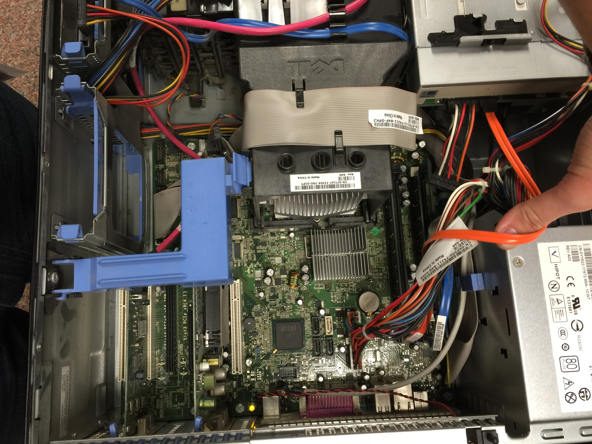
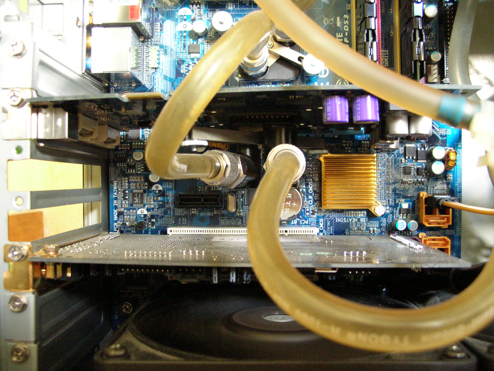
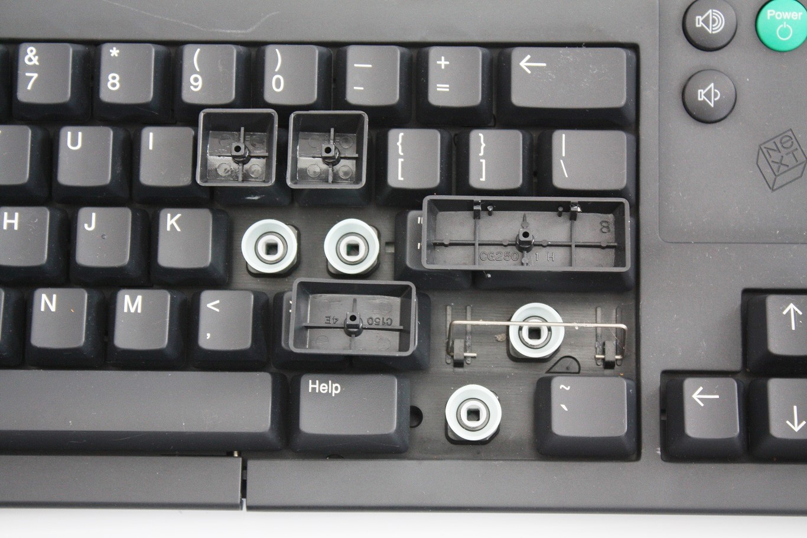

01 / 03
A computer is a
system of layers.
Explore hardware in 3D
Click to enter. Scroll each layer. Watch the system return.
08
identifiable
components
components
PC, ATX desktop
08 nodes
Full assembly
00 / 10complete system
3D canvas unavailable. Use the component notes below to continue.
Waiting for activation
02 / 03
Heat has a
route to follow.
Thermal path, liquid cooling
Click to enter. Follow heat through the loop, from plate to fins.
06
thermal
components
components
Loop overview
00 / 08complete cooling loop
3D canvas unavailable. Use the component notes below to continue.
Waiting for activation
Thermal system, AIO
06 nodes
03 / 03
Every press begins
below the keycap.
Input device, mechanical keyboard
Click to enter. Follow a keycap, switch, circuit, and controller.
07
mechanical
layers
layers
Input device, 75% board
07 nodes
Keyboard overview
00 / 09complete input device
3D canvas unavailable. Use the component notes below to continue.
Waiting for activation
The model is a guide.
Sources keep it honest.
Source desk
Photographs are included so the procedural model can be compared with real hardware. The 3D geometry in this prototype is intentionally readable rather than manufacturer-specific. The supplied visual studies also appear beside each learning sequence.

Open source page ↗

Open source page ↗

Open source page ↗